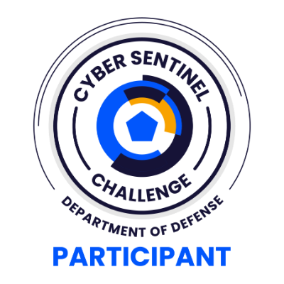

Department of Defense · Capture the Flag · Hosted by Correlation One
Competed solo in a DoD-level Capture the Flag cybersecurity competition against 2,151 participants. Solved challenges across networking, reconnaissance, web application testing, OSINT, and forensics using professional security tools — finishing ranked #767 on the national leaderboard.

| Challenge | Category | What I Did | Tools Used |
|---|---|---|---|
| Clear(ed) Text | Networking | Reviewed a PCAP for plaintext HTTP login activity. Followed HTTP streams, identified POST data, and decoded URL-encoded special characters to find exposed credentials. | Wireshark, Follow HTTP Stream, CyberChef |
| Hoasted Toasted | Recon | Investigated virtual hosting by inspecting a TLS certificate Subject Alternative Name (SAN) field, then used host-header testing to reach hidden content on the server. | Browser cert viewer, /etc/hosts, Burp Suite, cURL |
| Screamin' Streamin' | Recon | Scanned for an exposed RTSP service, identified the port, enumerated the valid stream name, and validated the live stream connection using media player tools. | Nmap, ffprobe, ffplay, VLC |
| Robots Discovery | Web | Reviewed a website's robots.txt file to identify a disallowed path. Navigated to the hidden path to retrieve the flag — reinforcing that robots.txt is not a security control. | Browser, cURL, robots.txt review |
| Inspo | OSINT | Used image clues, architectural details, and external research to geolocate a building within a valid coordinate radius. Required slow observation and multi-source correlation. | Image analysis, map review, press-release research |
| Decryption Conniption | Forensics | Chained multiple evidence sources: PCAP, VNC keystroke analysis, memory dump, SSLKEYLOGFILE recovery, TLS traffic decryption, and encrypted archive review — a full investigation chain. | Wireshark, Volatility 3, NetworkMiner, tshark, 7z |
I first learned about the DoD Cyber Sentinel Challenge through the GovTech Blueprint Skool community. When I received the acceptance email, I was surprised and questioned whether I belonged in the event. I chose to show up, compete, and treat the experience as a learning opportunity instead of letting doubt make the decision for me.
I used Kali Linux as my main environment and kept organized notes on tools, commands, clue paths, solved items, and tasks that needed more research. Staying organized mattered because CTF pressure can make it easy to lose track of what has already been tested.
For target-based challenges, I began by identifying what was available. I used Nmap and DNS tools to map ports, services, hostnames, and possible application paths. This helped me avoid guessing and made each next step more intentional.
I earned 1,200 points during the competition and finished with a final score of 975 after revisiting tougher tasks. I placed #767 out of 2,151 participants — in the top 36% of all competitors in a DoD-level national event.
The biggest win was proving to myself that I can learn under pressure, keep moving when stuck, and turn the experience into real portfolio evidence. Every unsolved challenge identified a skill gap that became a future lab or study target.